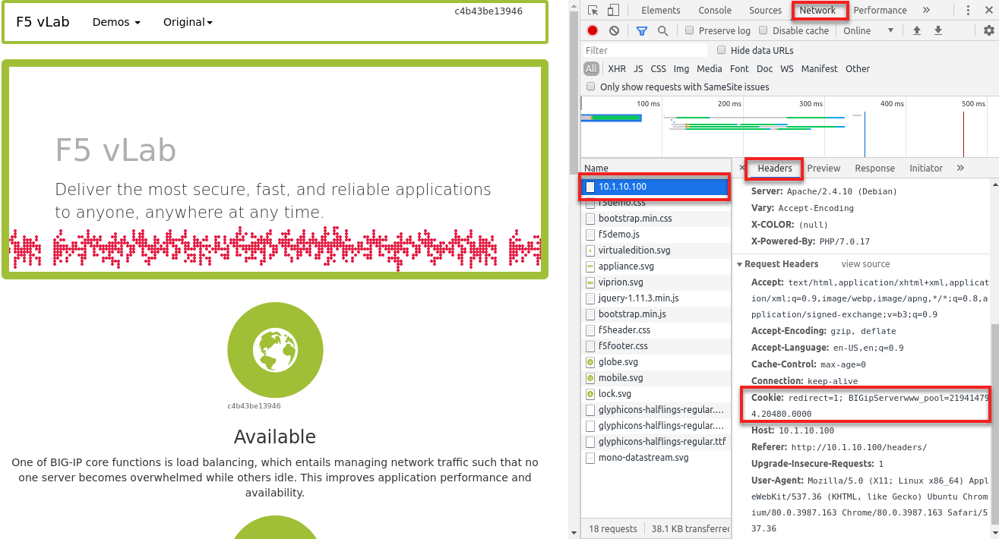

Unofficial - F5 Certification Exam Prep Material > F5 201 - TMOS Administration Labs 08/11/2020 > Lab 2 – Virtual Server and Pool Status and Behavior Source | Edit on
Load Balancing¶
Static Load Balancing¶
In the task, you will look and the various effects of different load balancing configurations.
Open the www_pool Members tab.
Note the load balancing method on the pool and the Ratio and Priority settings on the members. Select each member and update them to the following:
| Member | Ratio | Priority |
|---|---|---|
| 10.1.20.11 | 5 | 10 |
| 10.1.20.12 | 1 | 10 |
| 10.1.20.13 | 1 | 5 |
Go to Local Traffic > Pools > Statistics and clear the www_pool statistics.
Browse to http://10.1.10.100 and F5 at least 10 times.
Q1. Which www_pool members was traffic sent to?
Q2. Did member 10.1.20.11 receive the most traffic? Why not?
Under the Members tab change Load Balancing Method to Ratio (member) then Update.
Clear stats for www_pool and browse http://10.1.10.100 several times.
Browse to http://10.1.10.100 and F5 at least 10 times.
Q3. Which www_pool members was traffic sent to?
Q4. Did member 10.1.20.11 receive the most traffic?
Priority Group Activation¶
On the www_pool change the Load Balancing Method back to Round Robin.
Change Priority Group Activation to less than 2 and Update.
Clear statistics for www_pool and browse to http://10.1.10.100 hitting F5 several times.
Q1. Which www_pool members was traffic sent to?
On the pool statistics page, select member 10.1.20.11:80 and change the State to Disable.
Clear statistics for www_pool and browse to http://10.1.10.100 hitting F5 several times.
Q2. Which www_pool members was traffic sent to? Why?
Q3. Would the results have been different if 10.1.20.11:80 had been marked offline or marked with a yellow triangle?
Important
Once you have complete the lab, change then Load Balancing Method to Round Robin, Priority Group to Disabled, and Enable pool member 10.1.20.11:80
Effects of Persistence on Load Balancing¶
In this task, you will enable persistence on the www_vs and see the effects of persistence on load balancing. You will also see where to view persistence records that are maintain by the BIG-IP
Enable a Persistence Profile on www_vs by opening the virtual server and selecting the Resources tab.
Assign the following persistence profiles:
Default Persistence Profile: cookie
Fallback Persistance_Profile: source_addr
Did you see an error requiring an HTTP profile? Correct the error by assigning the HTTP profile to the virtual server.
Q1. Why was a http profile required?
Clear stats for www_pool and browse to http://10.1.10.100 hitting F5 or refresh several times.
Q2. Was traffic evenly distributed to all www_pool members? Why not?
Place the pointer in the web page and right click and selectg Inspect. Select Network from the top bar in the right window and refresh the page.
Select 10.1.10.100 in the Name section and look at the Headers in the Cookie header you will see the BIG-IP cookie named BIGipServerwww_pool.
Open Statistic > Module Statistics > Local Traffic > Persistence Records
Click on pool member displayed on persistence record and Disable the pool member.
Browse to http://10.1.10.100.
Q3. Did you persist to the Disabled member? Why?
Change status of persisted pool member to Forced Offline
The cookie persisted records should still exist. Browse to http://10.1.10.100.
Q4. Does traffic continue to persist to the member Forced Offline?
Q5. If cookies were disable on your browser would persistence still work? Why?
TMSH
An Alternate method to display persistence is:
show ltm persistence persist-records